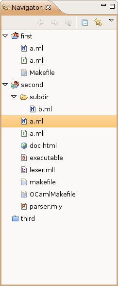

The navigator view is used to manage your projects and files, in a hierarchical view.
Here is the navigator on an example workspace:

In this example, we have three projects. The first project is an OCaml Managed Project, the second project is an OCaml Makefile Project, and the third project is closed. You can notice that projects have different icons depending on their type.
In the second project, we have a module (a.ml) and its interface (a.mli), a bytecode executable (the "B" icon indicates this is a bytecode executable), an ocamllex file (lexer.mll), an ocamlyacc file (parser.mly), an html file (doc.html), a makefile and the generic makefile (OCamlMakefile), and a folder which contains a module file (b.ml).
You use the navigator to: